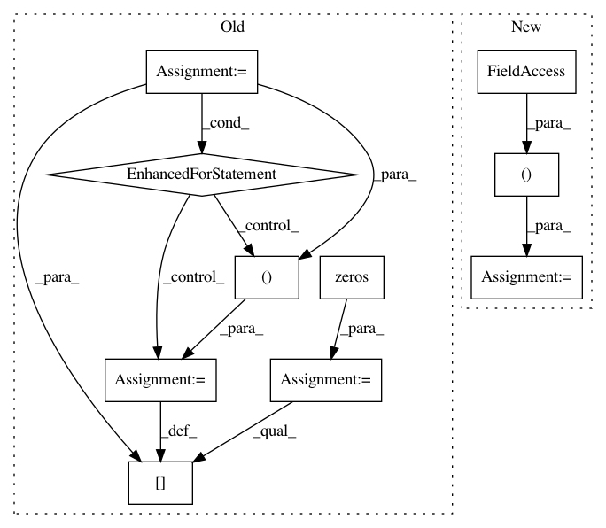

9b31677971ef20cb033e787cdaac6f639a728e05,imblearn/under_sampling/_prototype_selection/_instance_hardness_threshold.py,InstanceHardnessThreshold,_fit_resample,#InstanceHardnessThreshold#,133
Before Change
target_stats = Counter(y)
skf = StratifiedKFold(n_splits=self.cv, shuffle=False).split(X, y)
probabilities = np.zeros(y.shape[0], dtype=float)
for train_index, test_index in skf:
X_train = _safe_indexing(X, train_index)
X_test = _safe_indexing(X, test_index)
y_train = _safe_indexing(y, train_index)
y_test = _safe_indexing(y, test_index)
self.estimator_.fit(X_train, y_train)
probs = self.estimator_.predict_proba(X_test)
probabilities[test_index] = probs[range(len(y_test)), y_test]
idx_under = np.empty((0,), dtype=int)
for target_class in np.unique(y):
if target_class in self.sampling_strategy_.keys():
After Change
self.estimator_, X, y, cv=skf, n_jobs=self.n_jobs,
method="predict_proba"
)
probabilities = probabilities[range(len(y)), y]
idx_under = np.empty((0,), dtype=int)
for target_class in np.unique(y):
In pattern: SUPERPATTERN
Frequency: 3
Non-data size: 10
Instances
Project Name: scikit-learn-contrib/imbalanced-learn
Commit Name: 9b31677971ef20cb033e787cdaac6f639a728e05
Time: 2019-11-17
Author: redoykhan555@gmail.com
File Name: imblearn/under_sampling/_prototype_selection/_instance_hardness_threshold.py
Class Name: InstanceHardnessThreshold
Method Name: _fit_resample
Project Name: scikit-learn-contrib/DESlib
Commit Name: 44bdf9be3b913a1a0e90115e45edbee192d01b90
Time: 2018-03-31
Author: rafaelmenelau@gmail.com
File Name: deslib/des/probabilistic.py
Class Name: Probabilistic
Method Name: estimate_competence
Project Name: scikit-learn-contrib/DESlib
Commit Name: 1e6e979fd9de47c38e2bda2189008a3bae1faaf4
Time: 2018-08-24
Author: rafaelmenelau@gmail.com
File Name: deslib/des/des_mi.py
Class Name: DESMI
Method Name: estimate_competence